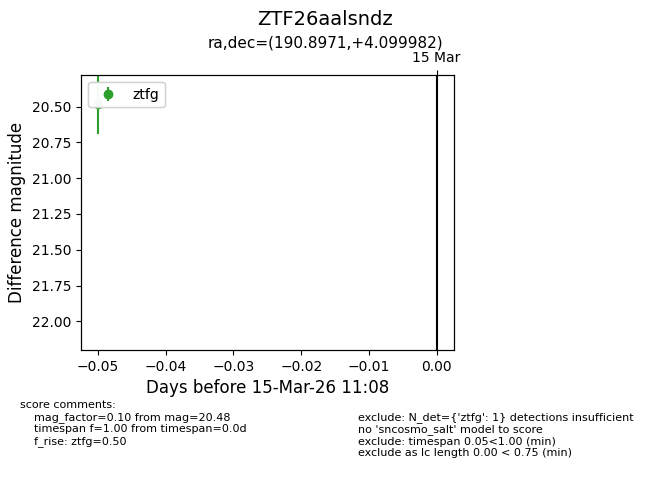
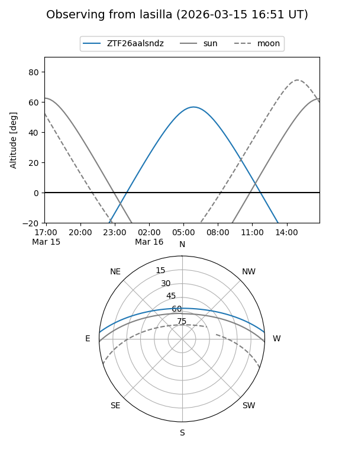
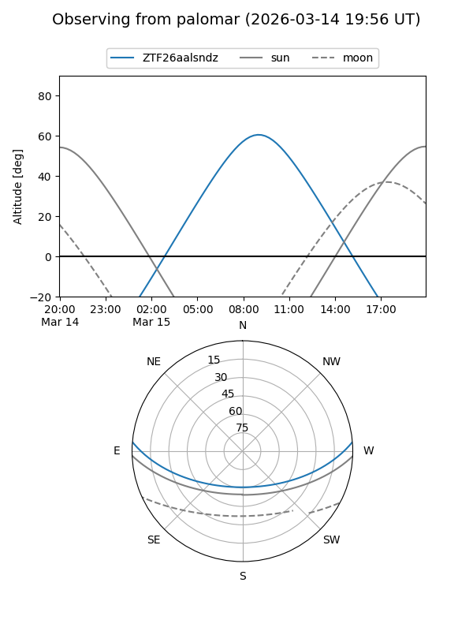

ZTF26aalsndz
Target ZTF26aalsndz at 2026-03-15 11:10
Aliases and brokers:
FINK: link
Lasair: link
ALeRCE: link
alt names
ZTF26aalsndz (ztf,fink_ztf)
Coordinates:
equatorial (ra, dec) = 190.8971,+4.09998
equatorial (HMS+DMS) = 12:43:35.30,+04:05:59.94
galactic (l, b) = (297.9385,+66.89560)
Flags:
Photometry:
last ztfg=20.48
1 ztfg detections
Lightcurve

Visibility


Additional plots